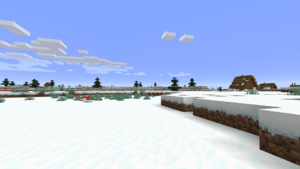

{kind=link}
如果你不知道什么叫作“生物群系”，我可以告诉你，它是游戏中用于设置何种地表（沙子？还是草？），是下雨还是下雪，长什么树，以及允许何种动物生成的气候区。
——Jens Bergensten

一条河把一个丛林生物群系一分为二。

一条穿过恶地的河流，左上角是一片热带沙漠。

一处暖水海洋生物群系。
生物群系（Biome） 是Minecraft世界中形态各异的地区，有着多样的地理特征、植物群、海拔高度、温度、湿度、天空及植被颜色。生物群系将生成的世界划分为一个个不同的自然环境，譬如森林、丛林、沙漠和针叶林。
温度系统
{kind=link}

温度影响海草的绿色和水的蓝色的深浅
每个生物群系均有一个温度数值来决定该位置是否能够降水。该数值低于0.15即下雪，0.15-0.95即下雨，高于1.0将会使区域保持干旱。这些数值也用于决定不同生物群系中积雪的高度。每从默认海平面（Y=64）向上升高1米，温度将会降低0.0016（1⁄625）。海平面以下不会有温度变化。
譬如，山地生物群系为高原气候，即其温度基础值为0.2，因此Y=95的位置将会积雪；热带草原、沙漠和恶地群系，则因为高温而不会下雨下雪。自定义世界中的“海平面”设置不会影响温度系统。
若以温度区分，主世界的生物群系可以分为6类：积雪、寒冷、温和/茂密、干燥/温暖、海洋及中性。这样分类是为了防止两个邻近的生物群系的温度差别太大，以便于两个相近温度的生物群系（如森林和沼泽）更容易靠近在一起。实际上这个系统并不完善，只能用来粗略计算该生物群系是否可能降雨或降雪，精细计算其积雪高度是无法做到的。
生成
生物群系集群
尽管生物群系仍被分为五个大类，1.7与当前版本的生物群系生成仍有以下不同。总的来说，陆地生物群系以四种不同的集群生成：寒冷生物群系、温和生物群系、茂密生物群系与干燥生物群系。温和与茂密生物群系集群时常难以区分，其唯一的区别在于温和生物群系有针叶林区域而茂密生物群系为沼泽、白桦林和黑森林区域。温和与茂密生物群系集群时常最为广袤；寒冷与干燥生物群系生成为较小的集群，但是也可能延绵数千方格。寒冷生物群系集群包括积雪的冻原与积雪的针叶林。干燥生物群系集群包括热带草原、平原和沙漠。温和与茂密生物群系集群均包括山脉、平原与森林生物群系。
在积雪气候中，积雪冻原的权重是积雪针叶林的三倍，因此其远比针叶林常见。干燥气候中，沙漠的权重是平原的三倍，热带草原的权重则为两倍。
积雪、温和、茂密和干燥生物群系集群与蘑菇岛、丛林、巨型针叶林、海洋与深海均在生物群系生成的气候阶段生成并预先决定。此后，生物群系集群中再生成其对应的生物群系。
蘑菇岛、恶地、丛林与巨型针叶林四种陆地生物群系更加稀有且不与生物群系集群一同生成。蘑菇岛按海洋生物群系的方式生成，恶地生成在干燥生物群系中，丛林在茂密生物群系中，巨型针叶林在温和生物群系中。后三者偶尔亦可独立于其集群生成。另外，“边缘”变种生物群系可于这三种生物群系周围生成。丛林边缘将丛林从除常规森林与针叶林之外的大部分陆地生物群系分隔开（如果与沼泽相邻，边缘生物群系可延伸至多三个区块）；沙漠将恶地与除恶地变种之外的生物群系隔开；针叶林及其变种将巨型针叶林与除积雪针叶林之外的生物群系隔开。作为边界的小型沙漠与丛林边缘在沙滩/海岸阶段生成。生成蘑菇岛时，蘑菇岛岸作为“技术上的”河流与沙滩生成。但是如果深海与蘑菇岛重合，蘑菇岛岸不会生成。
生物群系边缘
在生物群系生成的边缘生成阶段，某些生物群系的一部分可能被其他生物群系覆盖并替换。此现象通常发生于两个会产生奇怪迥异边界的相邻的生物群系之间。沼泽与积雪区域和沙漠相邻时，沼泽可被平原替代；丛林与沼泽相邻时，沼泽可被丛林边缘替代；积雪冻原与沙漠相邻时，沙漠可被繁茂的山地替代。
包围巨型针叶林的针叶林生成于在边缘生成阶段，然而包围丛林和恶地的丛林边缘和沙漠却生成于沙滩/海岸生成阶段。因此，后两种生物群系边缘不会生成变种，但是变种可以在边缘生成阶段覆盖任何边缘生物群系。
请注意，处理丛林边缘与沼泽边界的是边缘生成阶段而非沙滩/海岸生成阶段，因此仅有丛林边缘与沼泽相邻时才会生成丛林边缘变种。
其他信息
{kind=link}

五种草方块与树叶的绿色调： 蓝灰色（积雪），海蓝色（寒冷、海洋与白桦林），绿色（温和），橄榄绿（干燥）与棕色（恶地）。
丘陵生物群系的生成与位置是预先决定的，而变种生物群系有自己的生成阶段。黑森林使用平原作为自己的“山脉”，由此生成林中空地。在平原上可以生成森林、森林丘陵与繁花森林。海洋生物群系中可以生成深海，深海中可以生成带有平原与森林的稀疏岛屿。生成于海洋中的蘑菇岛在气候阶段即预先决定。对于恶地，实际上生成的“主要生物群系”是恶地高原，而正常的恶地作为丘陵生成。常规恶地也会在恶地高原的边缘生成，这种情况下，正常恶地生成于边缘生成阶段。对于丘陵变种，如果某个生物群系没有对应的变种丘陵生物群系（如温带海洋与沼泽），则仅生成常规的生物群系。自水域更新以后，变种生物群系可能与整个生物群系相同，也可以与河流相邻。
在生成中，河流与沙滩简单地覆盖整个陆地生物群系。
海洋生物群系的温度完全独立于陆地生物群系的生成，因此，冻洋可能与恶地生物群系相邻。这是为了不用完全修改陆地生物群系的生成。
在Java版中，决定生物群系的形状只用到64位世界种子的前24位，同一个世界种子生成的生物群系形状可能在距原点229格远处开始重复。生物群系按4×4格划分区段进行采样，因此生物群系生成算法会在233格处溢出，而生物群系每234格就会重复一次。将生物群系的大小缩小会导致在4×4采样下生成的沙滩与边缘生物群系消失。某些在边缘生成阶段而非沙滩/海岸阶段生成的生物群系仍能维持正常宽度，尽管噪点图上的生物群系缩小了。
虽然Java版的种子有64位，用于陆地/海洋生物群系生成的独特噪点图只有263张，这是因为生成时使用了二次方程。因此一对不同的种子会生成完全相同的陆地与海洋生物群系，但是生物群系温度、结构和丘陵的生成会不同。这种现象被通俗地称为“影子种子”（Shadow seed）。欲找到对应的影子种子，用64位整数计算器将种子减去-7379792620528906219即可。这种现象仅在Java版上有效。
基岩版使用32位种子和不同的生成算法，但是其与使用64位种子的Java版仍有一些相似之处。以32位种子生成的变种生物群系、海洋（及其岛屿）、稀有生物群系（丛林、恶地、蘑菇岛、巨树针叶林）的位置与寒冷、温和和干燥生物群系集群的特定生物群系与用等值正64位种子生成的之间有某种地理关系。而生物群系的形状变化极大。茂密生物群系集群的特定生物群系生成则完全不同。
生物群系种类
在Java版中，共有79种不同的生物群系，在主世界中有67种，在下界有5种，在末路之地有5种，另有2种未使用的生物群系。在基岩版中，共有75种不同的生物群系，在主世界中有66种，在下界有5种，在末路之地有1种，另有3种未使用的生物群系。生物群系可以根据其草和树叶的颜色来区分，也可以参照生物群系中出现的方块（如不同种类的树木或仙人掌等其他植物，沙漠中大量的沙子）。生物群系是由种子随机生成的，不随着生成之后地形、植被、实体的更改而改变。
在下表中，积雪的生物群系标记为紫色，寒冷的生物群系为绿色，温和/茂密的生物群系为橙色，干燥/温暖的生物群系为红色，海洋生物群系为蓝色；下界生物群系为深红色；末地生物群系为品红色；没有标记颜色者为中性或未知。给出的温度值为该群系中海平面的温度值。
主世界生物群系
积雪生物群系
在这些生物群系中，所有的高度下均会降雪。树叶和草都呈深水绿色，水大多呈紫色。
| 生物群系的名称和ID | 特征 | 描述 | 样图 |
|---|---|---|---|
积雪的冻原 积雪的平原 12
|
温度：0.0
雪、 降雪、 橡树、 冰、 云杉、 雪屋、 流浪者、 白色和一些黑白相间的兔子、 北极熊、 偶尔的草丛、 村庄、 掠夺者前哨站 |
一个相对广阔、平坦、大量覆雪的少见生物群系。所有暴露在天空下的水源均会结冰。甘蔗会在这里生成，但很快会在区块载入时因为水的冻结而被拔除。天然的橡树和云杉非常少见。此群系除了兔子和稀有的北极熊以外不会生成任何被动型生物。此群系是少数几个生成流浪者的群系之一。由于群系的大小，积雪和冰的覆盖，以及木材和动物的稀缺，与其他群系相比，最初的生存变得相当困难。这也是雪屋自然生成的两个生物群系之一。 |  |
冰刺平原 140
|
温度：0.0 | 积雪的冻原群系的一个罕见变种，其特点是浮冰构成的冰刺及浮冰“湖”。尖刺一般有10-20米高，但一些又长又细的尖刺可达50米。此群系中的所有草方块均会被替换为雪方块。像常规的冰原生物群系一样，此群系除了兔子和稀有的北极熊以外不会生成任何被动型生物，晚上也会自然生成流浪者。 | |
积雪的针叶林 30
|
温度：-0.5
雪、
降雪、
冰、
云杉、
花、
狼、
狐狸、
白色和一些黑白相间的兔子、
雪屋、
村庄 |
就像普通的针叶林一样，积雪的针叶林是一个相对平坦的生物群系，有着大片的云杉树。蕨类植物和它们较高的变种，在这里普遍出现，但仍然可以找到常规的高草。这是狼自然生成的少数地方之一。也可能会在树与树之间发现一个雪屋，使之成为雪屋自然生成的两个生物群系之一。 | |
积雪的针叶林山地 158
|
温度：-0.5 | 积雪的针叶林山地并不像积雪的针叶林那样扁平。与普通的针叶林山地相比，在这个生物群系中发现的山更陡峭，更不稳定。这个巨大的高度差异使冷针叶林生物群系变得相当危险。也不像其正常的变种，雪屋不在这里生成。 | |
冻河 11
|
温度：0.0 | 河面上覆盖着一层冰。只有当河流穿过或遇见积雪的冻原时会生成冻河。河里会生成鳕鱼，在夜晚，冰面下会生成溺尸，冰面上会生成流浪者。 | |
积雪的沙滩 26 |
温度：0.05 | 就像常规的海滩一样，这是一个可以找到大量沙子和埋藏的宝藏的生物群系。然而，这些沙子覆盖着一层雪。当寒冷生物群系与海洋生物群系接壤时，会经常出现积雪的沙滩。除了兔子，没有任何被动型生物会在这个生物群系中生成。 | |
雪林 - |
温度：-0.2 | 山地的繁茂覆积雪变种。该生物群系地表的泥土都被积雪、雪块、细雪和云杉覆盖。 | |
积雪的山坡 - |
温度：-0.3 | 山地的完全覆积雪变种。该生物群系的表面也会被积雪、雪块和细雪覆盖。积雪的山坡中的小型坡顶较平坦，细雪常在此处出现；但过渡到更高处的尖峭山峰或冰封山峰时会形成陡峭的山腰，侧面裸露出一大排石头。 | |
尖峭山峰 - |
温度：-0.7 | 山地的山顶变种，会在较高的海拔生成，罕见地在大约Y=260处达到顶峰，它与冰封山峰和裸岩山峰均为目前Minecraft中最高的生物群系。该生物群系表面被积雪和雪块覆盖。 | |
| 温度：-0.7 | 山地的山顶变种。其山势比尖峭山峰更平缓，山峰顶部几层被斑点状的冰和条带状的浮冰覆盖。其生成取决于温度，会在与部分寒冷/积雪生物群系（如针叶林、积雪的冻原）邻接时候代替尖峭山峰生成。 |
{kind=link}
寒冷生物群系
在这些生物群系中，超过一定高度（在256米的高度限制以下）后会下雪，否则会下雨。树叶和草都呈水绿色，水大多呈紫色和靛蓝色。
| 生物群系的名称和ID | 特征 | 描述 | 样图 |
|---|---|---|---|
山地 风袭丘陵 3
|
温度：0.2 | 一个多高山的生物群系（一些峰顶可以达y=130或更高)，稀疏分布一些橡树和云杉。在这里悬崖、山峰、山谷、瀑布、岩突、浮岛、洞穴，以及其他许多的结构一起构成了一幅美丽的画卷。这里是少数能生成羊驼的生物群系。在y=95以上的地区会有积雪覆盖，这条普遍的规则在这里再明显不过了。这里的地下洞穴系统也比其他任何生物群系都多。到了这里，坠崖是常有的危险，因为这里存在许多峭壁与石桥，并且有可能因为高度差太大而损伤巨量生命值，甚至导致死亡。这里是唯一自然生成绿宝石矿石和被虫蚀的方块的生物群系。 | |
沙砾山地 风袭沙砾丘陵 131
|
温度：0.2 | 普通山地生物群系的变种，特点是更高的、插入云中的山峰。山峰主要由沙砾和几小片草和泥土构成，以及为数不多的云杉。 | |
繁茂的山地 风袭森林 34
|
温度：0.2 | 这种生物群系通常在普通山地生物群系的中间被发现，生成更高的山地，因此大部分山地将被雪覆盖。斜坡非常陡峭，这使得攀登这些山地变得困难和危险。山峰的特点是草和云杉树的浓度要高得多，在其顶部会形成一片小森林。 | |
沙砾山地+ 162
|
温度：0.2 | 这种繁茂的山地生物群系的变种除去了大部分植被，有利于塑造主要由沙砾和石头覆盖的地形，这使它更加类似于沙砾山地生物群系。更大和更深的山谷镶嵌在相对贫瘠的景观中——这里只有几棵孤零零的树。和沙砾山地生物群系相同，当它紧挨着海洋生物群系生成时，海滩就产生了。 | |
针叶林 5
|
温度：0.25 | 这个生物群系常见而平坦，由云杉树林覆盖，蕨类植物通常在森林的地面上生长。你可能在这里发现一群狼，或者一群兔子。村庄可能会在这个生物群系中生成，不用说，这些村庄的房屋都是由云杉木建造的。 | |
针叶林山地 133
|
温度：0.25 | 针叶林山地生物群系也有大型云杉林，但这些植被都覆盖在山地上。与普通的山不同，这些山脉往往更高，更难以攀登。也许由于这个生物群系并不宜居，这里找不到村庄。 | |
巨型针叶林 原始松木针叶林 32
|
温度：0.3
云杉、
灰化土、
蕨、
狼 |
巨型针叶林由云杉组成，是一个少见的生物群系，与普通针叶林相似。然而，有些树的树干有2×2粗，且非常高，和大型丛林木相似。常见苔石巨砾和棕色蘑菇，森林地表上覆有灰化土，也分布有小片的砂土，其上不长草丛。狼会在这里生成，与一般的针叶林一样。 |
|
巨型云杉针叶林 |
温度：0.25 | 巨型针叶林的变种。此群系中云杉体型较小，但更为密集。另外，较高的云杉的外型与普通云杉类似，而非大型针叶林中的“棒棒糖”型。 | |
石岸 25
|
温度：0.2 | 这个被石头覆盖的生物群系常常毗邻山脉和海洋。根据附近陆地的高度，它既可以生成缓坡也能生成巨大的悬崖。被动型生物不会在这里生成。这里能找到埋藏的宝藏。 |
温和/茂密生物群系
在这些生物群系中，超过256米的高度限制以上会下雪，否则会下雨。除了沼泽和黑森林的深绿色以外，这些生物群系中的树叶和草呈现充满活力的浅绿色，水呈现蓝色。
| 生物群系的名称和ID | 特征 | 描述 | 样图 |
|---|---|---|---|
平原 1
|
温度：0.8 | 一个相对平坦多草的生物群系，有着起伏的山丘，但树较少。湖泊、水洼与村庄十分常见。因地形平坦、视线开阔，很容易发现洞穴入口、水泉和熔岩泉。被动型生物经常生成于此；此群系及其变种是马仅有的几个自然生成区域。 | |
|
|
温度：0.8 | 平原的罕见变种，会生成漫山遍野的向日葵。村庄不会在此生成。 | |
森林 4
|
温度：0.7 | 一种拥有大量橡树和桦树、少量的山丘和遍野的草丛的生物群系，时而可以找到蘑菇和花。森林是最理想的出生地之一，因为这里有丰富的木材资源，但密布的树木使得夜晚在森林里行动十分危险，因为树木会阻挡视线。森林可以在其他生物群系内部成块生成，通常是平原中；这些小块的森林通常只有几百格宽，故森林可能成为最小的生物群系之一。 | |
|
|
温度：0.7 | 森林生物群系的一个较为稀有的变种，树木较少，但繁花遍野，令人眼花缭乱。其中有数种花为繁花森林独有，这里会生成更多的蜂巢。 | |
桦木森林 27
|
温度：0.6 | 如果某些人只喜欢用一种木材，而那种木材恰好是桦木，那他们在这里一定感觉很棒。与普通森林不同，在这个生物群系中不会有狼生成。 | |
高大桦木森林 原始桦木森林 155
|
温度：0.6 | 桦木森林的一个罕见变种，其中的桦树比普通桦树高。正常的白桦树最高长到7格高，而这些树通常高十几格。这使得砍伐森林成为一项更加艰巨的任务，尽管它为玩家提供了更多的桦树资源。 | |
黑森林 29
|
温度：0.7 | 这个生物群系有大量的深色橡树、遮天蔽日的树冠、以及偶尔出现的巨型蘑菇。森林中的树众多而密布，以至于有些地方会黑暗到在白天也能生成攻击型生物。林地府邸会罕见地生成于此。 | |
黑森林丘陵 157
|
温度：0.7 | 多山版的黑森林，边界处有峭壁。林地府邸能够在这里正常生成。尽管亮度的提升意味着生物数量减少，但陡峭的悬崖仍然使得徒步跋涉十分困难。 | |
沼泽 6
|
温度：0.8 | 此生物群系地势处于海平面附近，平坦的草地上点缀有睡莲漂浮的暗绿色浅水池。黏土、沙子和泥土都能在池底找到。树木覆有藤蔓，且有时会扎根在水中。蘑菇和甘蔗非常丰富。沼泽小屋只会在此生成。同时，史莱姆也会在晚上自然生成，常见于满月时，使得沼泽到夜晚会变得危险。在这个生物群系中，温度会随机变化，不受高度的影响，导致植被的颜色各异。沼泽中的水呈深灰色而非蓝色
|
|
沼泽丘陵 134
|
温度：0.8 | 地形比较陡峭、植被稍绿的沼泽。不同于普通的沼泽，沼泽小屋不会在此生成。 | |
丛林 21
|
温度：0.95
丛林树、
橡树、
丛林神庙、
蕨、
花、
藤蔓、
豹猫、
可可果、
西瓜、
鹦鹉、
竹子 |
一个非常茂盛，但比较罕见的热带生物群系。它有着巨大的丛林树木，能长到最高31米，以及粗壮的2x2树干。橡树也十分常见。丛林景象为一片郁郁葱葱的丘陵，山谷深处的小湖若隐若现，时而还会高于海平面。丛林的地面被树叶覆盖——这些“灌木”由中间的一块丛林木和包围在四周的橡树叶构成。置身丛林时，天空看起来会明显更明亮。大多数方块都长有藤蔓，洞穴入口也会被藤蔓遮盖。豹猫、丛林神庙、西瓜和可可果只生成在这个生物群系中。西瓜会生成为小堆，与南瓜差不多。 | |
| 温度：0.95 | 山峰远多于正常丛林的丛林生物群系，有着多得几乎把地面完全遮住的树叶。这是一个资源丰富的生物群系。由于山峦密布、树木高大，这些树经常会长到云层上面。因为这个生物群系植被丰富，高度落差大，很容易影响视线，寻路艰难，尤其是在夜晚。 | ||
丛林边缘 稀疏的丛林 23
|
温度：0.95 | 一种稀有的生物群系，只生成在丛林生物群系与其他生物群系的交界处。与丛林相似，但丛林木和灌木丛密度减小、体型变小，且地形相对平坦。 | |
丛林边缘变种 151
|
温度：0.95 | 这个生物群系中的地形比正常的丛林边缘略微更加丘陵化和粗糙，虽然它的一些大而扁平的部分通常很难与其标准变体区分开来。丛林边缘变种是游戏里最稀有的生物群系，并且通常仅在丛林变种与沼泽山地相遇时生成。结果会是一个双层过渡区域，其中包括沿着丛林边缘一侧的丛林边缘变种，以及在沼泽山地一侧的正常丛林边缘的薄边界。由于丛林边缘和沼泽山地都是稀有的生物群系，并且它们很少会相互接壤，丛林边缘变种极为罕见。其生成所需的严格条件也使它成为一个非常小的生物群系，它的长宽通常不超过150格，有些甚至仅有几十格。 | |
竹林 168
|
温度：0.95 | 此生物群系的地表由草方块和成片的灰化土组成。只有大型丛林树和大型橡树会作为树木在此自然生成。灌木虽然也会在此生成，但不至于像丛林那样遮盖整个地表。此处树木的密集程度与丛林边缘相比要低很多，但竹子会取而代之在此大量生长。豹猫和鹦鹉这类只能生成在丛林及其变种生物群系的生物同样可以在此生成。在Java版中，这里是唯一能够生成熊猫的生物群系，而在基岩版中，熊猫在这里生成的频率要远高于丛林。在Java版中，丛林神庙也会在此生成。 | |
竹林丘陵 169
|
温度：0.95 | 与竹林相似，只是拥有更陡峭的地形。大量的竹子覆盖在表面，大片的灰化土替换了草方块。像竹林一样，自然生成的树木都是大型变种。丛林神庙可在此变种生成。 |
|
河流 7
|
温度：0.5 | 一个细长的，由水组成的生物群系，像现实中的河一般弯曲。河流用于分离地形或隔开主要的生物群系。它们趋向于流入海洋，有时候会两头都流入海洋。罕见情况下，河流会脱离海洋而流成一个圈。河流中没有流动的水。河流植被的绿色稍呈枯干，与海洋群系类似；偶尔也会出现橡树。河流是黏土的来源之一。这里非常适合钓鱼。 | |
沙滩 16
|
温度：0.8 | 生成于海洋的岸边，由沙子组成。海滩会跨越地形，并将原本的方块移除并放上沙子。某些海滩会生成沙砾而非沙子。这里同样适合钓鱼。有关海滩的历史请见海滩。 | |
蘑菇岛 14
|
温度：0.9 | 这个生物群系由平坦的地形和高山组成，地表的草地被菌丝替代。手动放置的草方块呈亮绿色，与丛林生物群系相似。蘑菇岛倾向于临近海洋，且一般与其他生物群系隔绝。它是可以自然出现巨型蘑菇的两个生物群系之一，并且这里的蘑菇可以在最大亮度下生长。
在技术上，除了哞菇，没有生物会在这里生成（包括夜晚生成的攻击型生物，但不排除其他生物群系中生成的生物进入）。这对洞穴、废弃矿井和其他阴暗的结构同样成立，这意味着在地下探索是相对安全的。但刷怪笼依旧会生成生物，玩家也可以通过动物繁殖或使用刷怪蛋来生成生物。 |
|
蘑菇岛岸 15
|
温度：0.9 | 蘑菇岛海岸代表了从蘑菇岛到海洋的过渡，是由海滩构成的长条状的生物群系。然而，如果蘑菇岛外的海洋是深海变种，则不会生成蘑菇岛海岸。当河流遇见蘑菇岛时，也会生成蘑菇岛海岸，类似于冻河在积雪的冻原的行为。这里的地形比蘑菇岛更加平坦，也更靠近海平面，不过其他特性与蘑菇岛类似，如由菌丝构成的地面、巨型蘑菇和缺乏攻击型生物。 | |
草甸 - |
温度：0.5 0.3 |
山地的繁花变种。该生物群系的地表由草地组成，色调略微偏冷。草地上方只会长有草、大量1格高的花，这里的花有时以单一种类大面积分布，有时则多种交错分布。 | 
|
干燥/温暖生物群系
在这些生物群系中，既不会下雨也不会下雪，但天色仍然会变暗。除了恶地生物群系的褐色以外，这些群系中的树叶和草呈橄榄色，水总呈浅绿色。
| 生物群系的名称和ID | 特征 | 描述 | 样图 |
|---|---|---|---|
沙漠 2
|
温度：2.0 | 一个荒芜的、相对不适合生存的生物群系，主要由沙丘、枯萎的灌木和仙人掌组成。沙子底下一般能找到砂岩。此群系中生成的唯一一种被动型生物是金色兔子，它们的毛色能很好地融入到沙海之中。如果沙漠靠近海洋或河流，那么就有可能找到甘蔗。由于视野开阔，在夜晚时可以清楚看见沙漠中的生物。沙漠村庄、沙漠水井和沙漠神殿只能在这个生物群系找到。沙漠有时也出现在恶地生物群系的边缘。沙漠也是最大的生物群系之一。 | |
| 温度：2.0 | 不同于普通的沙漠，沙漠湖泊中能找到一些湖泊，地形也稍微崎岖一些。尽管可以找到沙漠水井，但是沙漠神殿和村庄不会在这里生成。 | ||
热带草原 35
|
温度：1.2 | 一个相对平坦而干燥的生物群系，植被颜色发黄，稀疏分布着金合欢树，也不时生成橡树。高草丛遍布整个地面。村庄可以在此生物群系生成，几乎全由金合欢木材料构成。这里也是唯一一个同时生成马和羊驼的生物群系。 | |
破碎的热带草原 风袭热带草原 163
|
温度：1.1 | 不像平坦的热带草原，破碎的热带草原充满了极其陡峭的山脉，表面覆盖着砂土。这里的山脉极其陡峭，经常90度垂直地面，导致几乎不可能攀登上去。巨大的深湖经常形成于山脉上。在许多情况下，即使没有放大地形选项，山脉的高度也可以超过200甚至达到世界高度限制。巨大的水瀑布和熔岩瀑布十分常见。这里不会生成村庄，也不会生成马，但可以生成羊驼。 | |
恶地 37
|
温度：2.0 | 一种罕见的生物群系，由陶瓦、染色陶瓦构成，且像沙漠一样遍布枯萎的灌木。红沙取代了普通的沙子，红沙上偶尔会长有仙人掌。如果黏土资源稀缺，构成恶地的黏土将会十分有用，但恶地很罕见。另外，恶地有6种不同的样式可供探索。废弃矿井可以生成在恶地地表。金矿石也可以在地表附近大量生成，而不仅仅在32层及以下。 | |
被风蚀的恶地 165
|
温度：2.0 | 是恶地的变种。类似沙漠的地表上有高耸的陶瓦柱，与布赖斯峡谷的地形结构类似。 | |
繁茂的恶地高原 繁茂的恶地 38
|
温度：2.0 | 恶地高原的一个罕见的变种，干燥的橡树森林和草丛会在高原的顶部生成。 | |
繁茂的恶地高原变种 166
|
温度：2.0 | 繁茂的恶地高原的一个非常罕见的变种，比繁茂的恶地高原更陡峭，树木的生成几率更小，生成的山峰更不规则。 | |
裸岩山峰 -
|
温度：1.0 | 山地的山顶变种，与尖峭山峰的海拔高度、形态一致，但地表未覆雪，而是裸露出石头和条带状的沙砾、安山岩、花岗岩或方解石地层。其生成取决于温度，会在与干燥/温暖生物群系（如沙漠、热带草原、恶地）或是部分温和/茂密生物群系（如丛林、森林）邻接时代替尖峭山峰生成。 | |
热带高原 36
|
温度：与其基础生物群系相同。 | 类似于丘陵生物群系，但顶部被平整形成台地，比海平面高出20-30米。仅生成于热带草原和恶地中。 | |
恶地高原 39
|
|||
| 高原变种
|
温度：与其基础生物群系相同。 |
与高原生物群系类似，高原变种是生物群系变种的变种。恶地高原变种相比一般的恶地更为平坦，高地面积变小。与此相反，热带草原变种相比一般的热带草原，其悬崖惊人的高大，像是从平地拔地而起一般；这些悬崖一般超过云层高度，有时超过 y=200，甚至接近世界高度限制。
与一般的恶地高原相比，恶地高原变种具有变化更多的地形和更小的高原，就好像一个较大的高原随着时间的推移而风化。 破碎的热带高原生物群系的地形比普通对应物的地形要小得多。它拥有令人难以置信的大而陡峭的、突出的山地，类似于破碎的热带草原生物群系，虽然稍小一些，但比较温和。 |
海洋生物群系
海洋是大型、开放的生物群系，完全由水组成，水位高达y=63。海底分布着随机的海底地形，如小山和平原，通常包括沙砾。海洋通常在任何方向上延伸3000格方块以下；大约60％的世界表面被海洋覆盖。在海洋中可以找到不常见植被的小岛屿。被动型生物无法在这些岛屿上生成，但攻击型生物可以生成；鱼和鱿鱼经常在水中生成。水下洞穴入口也经常出现在海底。
| 生物群系的名称和ID | 特征 | 描述 | 样图 |
|---|---|---|---|
海洋 0
|
温度：0.5 | 基础的海洋生物群系。类似于冷水变种，它的海床由沙砾构成。海草、海带和鳕鱼可以在这里生成。 | |
深海 24
|
温度：0.5 | 海洋生物群系的变种。深海可以达到30米深，是普通海洋的2倍。深海的海床主要由沙砾组成。深海中会生成海底神殿，里面会生成守卫者。海底峡谷经常生成，顶层的熔岩被岩浆块取代，从而形成下降气泡柱。 | |
暖水海洋 44
|
温度：0.5
海豚、河豚、热带鱼、热带海底废墟、珊瑚礁、珊瑚块、珊瑚、珊瑚扇、沙子、海泡菜、海草、沉船、安山岩 |
海洋生物群系的一种变体，水的表面呈浅绿色。像温水海洋一样，它有一个由沙子组成的海底，像所有海洋一样，它有海草。与其他海洋生物群系不同，温水海洋可以生成珊瑚礁和海泡菜，但不能生成海带。 | |
温水海洋 45
|
温度：0.5 | 海洋生物群系的一种变体，表面呈浅青色。它的海底由沙子和少许泥土或黏土组成，这里会生成海带和海草。与暖水海洋生物群系不同，鳕鱼可以在这里生成。 | |
温水深海 48
|
温度：0.5 | 类似于温水海洋生物群系，但深度是其两倍。因为它是深海变种，所以可以生成海底神殿，里面会生成守卫者、远古守卫者和海绵。 | |
冷水海洋 46
|
温度：0.5
|
海洋生物群系的变种，表面有深蓝色的水。像普通的海洋和冻洋一样，它的海床由沙砾组成，间或点缀着三三两两的泥土。此外，鲑鱼能够在冷水海洋生物群系中生成。 | |
冷水深海 49
|
温度：0.5 | 类似于冷水海洋，但深度是它的两倍。和其他深海生物群系相同，它们也可以生成海底神殿。 | |
冻洋 10
|
温度: 0.0 | 海洋生物群系的一种变种，表面呈深紫色。像冷水海洋一样，它有一个由沙砾组成的海床，也能见到鱿鱼在水中游泳。然而，水的表面经常被冰和冰山占据，冰山由浮冰和些许的蓝冰组成。流浪者和北极熊可以在这里生成，但海豚不会。 | |
封冻深海 50
|
温度： 0.5 | 和冻洋生物群系一样，这里唯一能生成的鱼类是鲑鱼，而海床是由沙砾构成的。在封冻深海生物群系还会生成海底神殿，因为它具有比普通海洋更深的海域，这一点与其他深海相同。不像它的浅表面，水面没有被冻结。你可以在这里找到星罗棋布的蓝冰冰山。海豚不在这里生成。 |
洞穴生物群系
洞穴生物群系
在Java版中，只有洞穴生物群系能在X、Z坐标相同的情况下随着Y高度变化其类型。例如，繁茂洞穴可能出现在溶洞的正上方，但沙漠不会生成在热带草原的正上方。
| 生物群系的名称和ID | 特征 | 描述 | [隐藏]样图 |
|---|---|---|---|
溶洞 174
|
温度：0.8 0.2 |
充满着滴水石块和滴水石锥的荒芜的生物群系。广布着滴水石簇及由滴水石锥组成的钟乳石、石笋或石柱结构，以及大量1格深的水坑。这里的铜矿簇比其他地方规模更大。溺尸会在这里的含水层中生成。 | |
繁茂洞穴 175
|
温度：0.5 0.9 杜鹃花丛及其盛开变种、苔藓块、苔藓地毯、洞穴藤蔓、孢子花、小型垂滴叶、大型垂滴叶、黏土块、水、多叶黏土层、草、高草丛、藤蔓、杜鹃树、缠根泥土、垂根、杜鹃树叶及其盛开变种、橡木原木、美西螈、热带鱼 |
生长着茂盛的洞穴植物的生物群系。洞顶悬挂着孢子花和洞穴藤蔓；洞穴内表面覆盖大量的苔藓块和苔藓地毯，草、高草丛和杜鹃花丛生长在苔藓块上；黏土块和水组成的多叶黏土层密布洞内，其中长有大型垂滴叶与小型垂滴叶。美西螈和热带鱼在洞内的水池中生成。
洞上方的地表有时会有一棵杜鹃树，树下是厚至洞顶的一层缠根泥土和倒挂下方的垂根。 |
中性及其他生物群系
这些生物群系本身具有许多变种，它们也是其他非中性生物群系的变种。
| 生物群系的名称和ID | 特征 | 描述 | 样图 |
|---|---|---|---|
虚空 127
|
温度：0.5 | 这个生物群系只会生成一个33×1×33的石头平台以及最中间的一个圆石。除非使用刷怪蛋、刷怪笼或命令，否则不会生成生物（被动型或攻击型）。只能通过超平坦预设“虚空”或者自定义世界来创建。 | |
| 丘陵 13、17、18、 19、22、28、 31、33、156、 161
|
温度：与其基础生物群系相同。 | 丘陵生成于特定的生物群系（包括部分变种）中，在调试屏幕中以主要生物群系名称后加“丘陵（Hills）”或“山地（Mountains）”字样表示。
丘陵生物群系包括：雪山、沙漠丘陵、繁茂的丘陵、针叶林丘陵、丛林丘陵、桦木森林丘陵、积雪的针叶林丘陵、巨型针叶林丘陵、高大桦木丘陵和巨型云杉针叶林丘陵。 大多数丘陵都是通常的生物群系地表上的柔和的斜坡，和一些零星的更陡峭的悬崖。雪山普遍较高，其高度与山地生物群系相当，且此群系生成被动型生物的几率比其余群系要低（7%而非10%）。 然而，巨型云杉针叶林丘陵是一个特例。游戏代码中设置数据值 |
   
|
下界生物群系
下界是一个与主世界不同的维度。该维度中所有群系都十分干燥，玩家在这里，无法放置水，但可以放置冰、浮冰、蓝冰、雪、雪块和细雪。
| 生物群系的名称和ID | 特征 | 描述 | 样图 |
|---|---|---|---|
下界荒地 8
|
温度：2.0
下界岩、 荧石、 灵魂沙、 下界石英、 下界金矿石、 恶魂、 烈焰人、 僵尸猪灵、 熔岩、 岩浆怪、 沙砾、 岩浆块、 猪灵 |
下界荒地由大片的下界岩和熔岩湖构成，熔岩湖岸边有时会形成灵魂沙沙滩和岩浆块，熔岩湖也不时会生成炽足兽。 僵尸猪灵和猪灵会在地面上生成，在此获取金粒和金锭也较为方便，这为玩家进行以物易物提供了一定条件。恶魂、岩浆怪和末影人也会少见地在此生成。 |

|
灵魂沙峡谷 170
|
温度：2.0 | 灵魂沙峡谷是大型的类洞窟地形，地貌广阔且与下界平常的地域有明显的分界。这个群系显著的特征是：暴露在外、形态各异的下界化石，大量的熔岩，蓝色的迷雾，由玄武岩组成的巨柱，在地表燃烧的灵魂火，以及偶尔生成的下界要塞。生物群系本身由灵魂沙、玄武岩和灵魂土组成。
在灵魂沙峡谷中，恶魂有很高的生成概率，骷髅和末影人会频繁成群生成，再加上灵魂沙会降低玩家的移动速度，这些因素使得穿过该群系是极其危险的一件事。建议避开该群系，除非玩家有足够的装备或策略来探索这一领域。 |
|
绯红森林 171
|
温度：2.0 | 绯红森林是红色调的生物群系，绯红菌、诡异菌和绯红巨型菌散布在其环境之中。
这里分布着巨型的菌类结构，垂泪藤悬挂在菌块下方，有时菌光体也会伴其生成。群系地表覆满绯红菌岩，其上生长着绯红菌索。偶尔下界岩会呈斑块状分散在地表，下界疣块也会在群系中散乱分布。在顶部的岩壁上，除了常见的荧石簇，下界疣块也会成堆生成，垂泪藤则会像钟乳石一样生长在它们的底部。 |
|
诡异森林 172
|
温度：2.0 | 诡异森林是茂密的青色调生物群系，绯红菌、诡异菌和诡异巨型菌散布其中。
这里分布着巨型的菌类结构，菌光体有时会生长在菌块周围。群系地表覆满诡异菌岩，其上生长着不同规模的诡异菌索。偶尔地，下界岩会呈斑块状分散在地表，诡异疣块也会在群系中散乱分布。 末影人是该群系中生成的唯一生物，并且生成得非常频繁。这使得诡异森林成为了收集末影珍珠以抵达末地的理想地点。该群系由于没有敌对生物生成，是下界相对安全的地方。 |
|
玄武岩三角洲 173
|
温度：2.0 | 恶魂、岩浆怪和炽足兽会生成于此生物群系。尽管可以说比灵魂沙峡谷更安全，但岩浆怪会生成得极其频繁。这也使得此生物群系成为获取岩浆膏的理想地点。
玄武岩三角洲看起来像是火山爆发后的废墟，其中充斥着大面积的黑石和玄武岩柱，以及大片的熔岩和岩浆块。黑石和玄武岩有可能会附在熔岩湖中。此生物群系生成的方式更像洞穴——类似于下界荒地，但地形更参差不齐。这里是生存模式中最容易获得玄武岩的地方，也是在生存模式大量获得黑石的途径。 这里的迷雾是灰色的，空气中散布着类似于火山灰的灰烬粒子。 |
末地生物群系
末地是一个由无数空岛构成的维度。
| 生物群系的名称和ID | 特征 | 描述 | 样图 |
|---|---|---|---|
末路之地 9
|
温度：0.5 | 该生物群系用于生成以末路之地中坐标(0,0)为中心的半径为1000的圆。末路之地的中心岛生成在该圆的中心。大多数末路之地的特征都在这个生物群系中，包括末影龙、黑曜石柱、末影水晶、5x5的重生平台、返回传送门和20个中央末地折跃门。大量的末影人在这个生物群系中生成。大多数末路之地的结构由维度自行生成而不是生物群系。与其他低温生物群系不同，这个生物群系不会下雨或下雪。在末影龙被击败后，可以使用末地折跃门到达末路之地的外岛。如果生物群系被用于超平坦世界，那么天空将几乎是黑色的，并且一条末影龙会在主世界的坐标(0,0)处产生。只有末影人会在晚上生成。 | 
|
末地小型岛屿 40
|
温度: 0.5 | 它作为末地外岛的一部分生成。这个生物群系填充了较大空岛之间的空旷空间，仅由比其他岛屿小很多的圆形空岛组成。 | |
末地中型岛屿 41
|
温度: 0.5 | 它作为末地外岛的一部分生成。这个生物群系是从空岛的山顶到边缘悬崖的坡度。末地城会在这里生成，但紫颂树不会。 | |
末地高岛 42
|
温度: 0.5 | 它作为末地外岛的一部分生成。这个生物群是空岛的山顶，并且是末地唯一一个兼具末地城和紫颂树的生物群系。 | |
末地荒岛 43
|
温度: 0.5 | 它作为末地外岛的一部分生成。这个生物群系是空岛的边缘，边缘下方是陡峭的悬崖。末地城和紫颂树都不会在这个生物群系中生成。 |
未使用的生物群系[]
这些生物群系不会在默认世界中生成。
| 生物群系的名称和ID | 特征 | 描述 | 样图 |
|---|---|---|---|
山地边缘 20
|
温度：0.2 | 类似于丛林边缘生物群系，山地边缘只产生在山地（及其变种）与其他生物群系的连接处，以平滑其过渡区。虽然此处的地形更低更平缓，一些足够高的区域仍可能被积雪覆盖。从Java版1.7.2起此生物群系不会自然生成。 | |
暖水深海 47
|
温度：0.5 | 暖水海洋的变种，深度加倍。由于是深海变种，珊瑚礁和海泡菜不会自然生成，而海底神殿可以生成，从而生成守卫者、远古守卫者、海晶石与海绵。在洞穴与山崖第二部分之前，暖水深海不会自然生成。 |
已移除的生物群系
生物群系ID
每种生物群系都拥有自己的生物群系ID，如下表所示。山地边缘和暖水深海不会自然生成。
ss| 名称 | 命名空间ID | 数字ID |
|---|---|---|
| 海洋 | ocean
|
0 |
| 平原 |
|
1 |
| 沙漠 | desert
|
2 |
| 风袭丘陵 | windswept_hills
|
3 |
| 森林 | forest
|
4 |
| 针叶林 | taiga
|
5 |
| 沼泽 | swamp
|
6 |
| 河流 | river
|
7 |
| 下界荒地 | nether_wastes
|
8 |
the_end
|
9 | |
| 冻洋 | frozen_ocean
|
10 |
| 冻河 | frozen_river
|
11 |
| 积雪的平原 | snowy_plains
|
12 |
| 雪山 | snowy_mountains
|
13 |
| 蘑菇岛 | mushroom_fields
|
14 |
| 蘑菇岛岸 | mushroom_field_shore
|
15 |
| 沙滩 | beach
|
16 |
| 沙漠丘陵 | desert_hills
|
17 |
| 繁茂的丘陵 | wooded_hills
|
18 |
| 针叶林丘陵 | taiga_hills
|
19 |
| 山地边缘 | mountain_edge
|
20 |
| 丛林 | jungle
|
21 |
jungle_hills
|
22 | |
| 稀疏的丛林 | sparse_jungle
|
23 |
| 深海 | deep_ocean
|
24 |
| 石岸 | stony_shore
|
25 |
| 积雪的沙滩 | snowy_beach
|
26 |
| 桦木森林 | birch_forest
|
27 |
| 桦木森林丘陵 | birch_forest_hills
|
28 |
| 黑森林 | dark_forest
|
29 |
| 积雪的针叶林 | snowy_taiga
|
30 |
| 积雪的针叶林丘陵 | snowy_taiga_hills
|
31 |
| 原始松木针叶林 |
|
32 |
| 巨型针叶林丘陵 | giant_tree_taiga_hills
|
33 |
| 风袭森林 | windswept_forest
|
34 |
| 热带草原 | savanna
|
35 |
| 热带高原 | savanna_plateau
|
36 |
| 恶地 | badlands
|
37 |
| 繁茂的恶地 | wooded_badlands
|
38 |
| 恶地高原 | badlands_plateau
|
39 |
| 末地小型岛屿 | small_end_islands
|
40 |
| 末地中型岛屿 | end_midlands
|
41 |
| 末地高岛 | end_highlands
|
42 |
| 末地荒岛 | end_barrens
|
43 |
| 暖水海洋 | warm_ocean
|
44 |
| 温水海洋 | lukewarm_ocean
|
45 |
| 冷水海洋 | cold_ocean
|
46 |
| 暖水深海 | deep_warm_ocean
|
47 |
| 温水深海 | deep_lukewarm_ocean
|
48 |
| 冷水深海 | deep_cold_ocean
|
49 |
| 封冻深海 | deep_frozen_ocean
|
50 |
| 虚空 | the_void
|
127 |
| 向日葵平原 | sunflower_plains
|
129 |
| 沙漠湖泊 | desert_lakes
|
130 |
| 风袭沙砾丘陵 | windswept_gravelly_hills
|
131 |
| 繁花森林 | flower_forest
|
132 |
| 针叶林山地 | taiga_mountains
|
133 |
| 沼泽山丘 | swamp_hills
|
134 |
| 冰刺平原 | ice_spikes
|
140 |
| 丛林变种 | modified_jungle
|
149 |
| 丛林边缘变种 | modified_jungle_edge
|
151 |
| 原始桦木森林 | old_growth_birch_forest
|
155 |
| 高大桦木丘陵 | tall_birch_hills
|
156 |
| 黑森林丘陵 | dark_forest_hills
|
157 |
| 积雪的针叶林山地 | snowy_taiga_mountains
|
158 |
| 原始云杉针叶林 | old_growth_spruce_taiga
|
160 |
| 巨型云杉针叶林丘陵 | giant_spruce_taiga_hills
|
161 |
| 沙砾山地+ | modified_gravelly_mountains
|
162 |
| 风袭热带草原 | windswept_savanna
|
163 |
| 破碎的热带高原 | shattered_savanna_plateau
|
164 |
| 被风蚀的恶地 | eroded_badlands
|
165 |
| 繁茂的恶地高原变种 | modified_wooded_badlands_plateau
|
166 |
| 恶地高原变种 | modified_badlands_plateau
|
167 |
| 竹林 | bamboo_jungle
|
168 |
| 竹林丘陵 | bamboo_jungle_hills
|
169 |
| 灵魂沙峡谷 | soul_sand_valley
|
170 |
| 绯红森林 | crimson_forest
|
171 |
| 诡异森林 | warped_forest
|
172 |
| 玄武岩三角洲 | basalt_deltas
|
173 |
| 溶洞 | dripstone_caves
|
174 |
| 繁茂洞穴 | lush_caves
|
175 |
| 草甸 | meadow
|
|
| 雪林 | grove
|
|
| 积雪的山坡 | snowy_slopes
|
|
| 尖峭山峰 | jagged_peaks
|
|
| 冰封山峰 | frozen_peaks
|
|
| 裸岩山峰 | stony_peaks
|